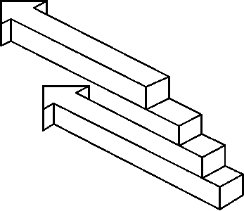
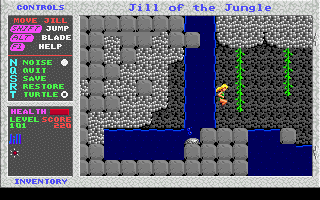
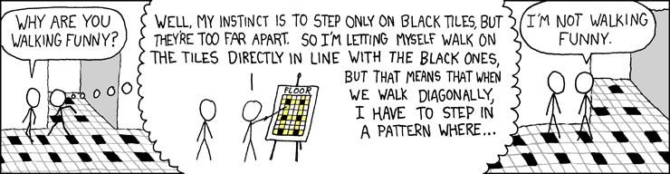

#238677 36 2006-10-09T08:24:45Z Romaniac Spacebar is too big and not quick enough
Shift is good at home but I use ctrl at school so i sometimes end up suiciding as a result...

#260850 103 2006-11-28T04:41:55Z Romaniac Isn't it funny
most people are voting blues according to the replys, but golds winning...
#260905 37 2006-11-28T07:08:41Z Romaniac Have you heard the song 'your mums gotta penis'?
btw, how do u add the signature things (soz im new to the forums...)
#260906 15 2006-11-28T07:13:23Z Romaniac Id rather be a chick than get my dick cut off
ouch
Does it get torn or ripped or is it a surgical cut?
#260910 45 2006-11-28T07:34:57Z Romaniac Star Wars
The title says its open but the deadline was passed...
?
http://numa.notdot.net/map/69891#261174 83 2006-11-28T21:42:50Z Romaniac sign me up...
#261176 14 2006-11-28T21:48:25Z Romaniac here is a map
dunno which level number it is...
http://numa.notdot.net/map/67776#261214 43 2006-11-28T23:03:37Z Romaniac i dunno
hey we were all noobs once

#261219 13 2006-11-28T23:08:26Z Romaniac well most of the time I start with something I thought up, then just make things that fit coming off that, since thats not there ill take Numan inspiration
#261896 17 2006-11-30T03:05:38Z Romaniac hahaha
sob
#262240 107 2006-11-30T21:18:25Z Romaniac you didnt see anything
#262446 21 2006-12-01T03:06:18Z Romaniac I found a picture of a robot and was wondering if you could do something to it,
like remove the words, improve it


#264065 105 2006-12-04T01:09:55Z Romaniac I noticed a spot in Forgast was still open
Not for much longer, im in
#264071 49 2006-12-04T01:24:57Z Romaniac Yeah i was pretty sure you could change it...
anyway I have PMd him but to no reply
#264079 56 2006-12-04T01:35:02Z Romaniac BURN!!!! [COLOR=red][FONT=Impact]
#264089 25 2006-12-04T01:47:01Z Romaniac well I dont actually have a pic for my sig, so does that answer the question?
#264758 88 2006-12-05T04:39:00Z Romaniac Fuck you Harder
#265636 142 2006-12-06T22:01:34Z Romaniac So, what?
you think Im the intruder?

#265639 19 2006-12-06T22:04:30Z Romaniac ah yep
i got 2 done, but my DDA got deleted (mum) so i gotta start again
#265931 149 2006-12-07T04:59:10Z Romaniac So, what?
you think Im the intruder?
I'm positive.
Thats news to me
and how do i become this 'intruder'?
#266423 20 2006-12-08T06:56:27Z Romaniac yay all finished
The tileset was based from a race map so it gives it quite a nice flow to it
also the DDA follows a similar path...!
ACTION!!!  RACE!!!
RACE!!!  DDA!!!
DDA!!!  PUZZLE!!! ::wabbit:
PUZZLE!!! ::wabbit:
Hope you all like it
#268033 54 2006-12-11T04:54:43Z Romaniac Alright, If he isn't here by wednesday, the 13 by midnight, then I will drop my entry and be the judge. Also i will supply the rewards accordingly. Everything I do is custom done though so you guys will have to put up with it (I need practice with art). 
~edit~
also, those who were going to judge, do it now.
Yeah, that sounds good
")
#268334 175 2006-12-11T21:22:14Z Romaniac yeah
sorry bout that
I made the demo,
went to submit it,
saw much faster demos,
watched them,
forgot I still had Hendor's demo copied,
must have pasted it instead of mine
Ill have to make a new one...

#268664 68 2006-12-12T05:52:18Z Romaniac Does map maker of the year have to be the best map maker who joined in 2006 or just the best performance of 2006?
mmm I dunno... I think joined
I think that only 5 maps per voting section isn't quite enough, and some of the selections i felt were a bit biased towards some authors, maybe, but thats just me
#268666 18 2006-12-12T05:55:15Z Romaniac yeah this is dead
but do i get anything?
#268668 177 2006-12-12T05:57:55Z Romaniac yeah I know its incomplete
I thought it was quite frustrating
**jumps, nearly at the exit, chaingun makes a near impossible shot into my back
**
I got another demo and it works

third time lucky
edit
reads ska's reply again...top two!!
oh crap im out i aint gonna getta demo that good
#269357 180 2006-12-13T09:29:42Z Romaniac meh its all good, at least I have the comfort i didnt come last
10:30 here, 30 mins to go, does Lord day still get through?
Good luck to Hendor, he deserves to win
#269937 186 2006-12-14T07:53:21Z Romaniac Oh gee youre kind ska
put me in last (storms out of the room)
na its all good, are there going to be 2 more rounds? I'll probably submit a demo to the next maps to see what I would have got If I wasn't the intruder...

#270438 5 2006-12-15T05:14:18Z Romaniac ill take the other Knight with apg
This might work and it might not, it could just take too long to do
#270445 57 2006-12-15T05:27:21Z Romaniac Its um... a tree thats upside down,
because all trees grow roots up

, and to play as a map, N can go inside the tree
#271976 16 2006-12-17T07:21:48Z Romaniac Sweet Im in, sounds great, but since there are people all over the world, some could be starting in the afternoon, and others at some early hour in the morning, so whats gonna happen bout that
#271979 3 2006-12-17T07:26:57Z Romaniac I may not always be avaliable, but Ill join
#271982 5 2006-12-17T07:40:38Z Romaniac Enjoy your stay!
lol
You make it sound like its a hotel of something...
#271997 83 2006-12-17T09:01:09Z Romaniac wow, one line can cause so much uproar
sorry, I wasn't thinking bout how the maps were picked
*go screw yourself* -thats a bit harsh dont you think?
#272806 62 2006-12-18T09:17:59Z Romaniac I did actually receive a reply from him, so hes not dead
but i'm all fine with this hostility
#273045 86 2006-12-18T20:54:27Z Romaniac hey hey
i just said it as an idea that some of the maps were biased towards some authors. I partly agree with mcp, but i voted for herror, so what do I know... If I was running this i would definitely put some of my maps in that werent as good as others that got shunned, it just human nature...
On numa, i resubmitted a map that I made when I was a noob that got 0 rates, and now it has a rating. This proves its not only how good the map is, but also who made it means quite a lot
Dont take this seriously
#273176 88 2006-12-19T01:02:12Z Romaniac But anyway, the point is that we are aware that everyone has biases. We've tried our best not to be biased. To be honest, I don't think you can argue that our choices are biased. You could argue we've made some wrong decisions, subjectively, but there's nothing to really show we've been biased.
Thats all good then
*edit*
hey wait a sec
MCP was just trying to cause trouble. He knows what he's doing.
Are you suggesting that I don't?

#273786 23 2006-12-20T08:09:56Z Romaniac get some entries?
im waiting for a date first
before/after christmas?
#273795 32 2006-12-20T08:38:09Z Romaniac floor guards yeah!!!
count thy in
#274847 12 2006-12-22T08:04:28Z Romaniac Actually, I have found that with normal locked door propulsion, you put the key 3/4 of the square away, then back two bits in the no snap, any further back at a slow speed will kill
Also with adding extra enemies (or moving them) it helps to know the order they attack in, then you keep that order while moving the enemy (by deleting and replacing the enemies in the same places) though sometimes quite annoyingly it still does stuff up
But good guide for the people that make nooby DDAs, I may try to use the glitched propulsion, but it seems a lot of work...
#274850 70 2006-12-22T08:08:14Z Romaniac mmm yeah this is all cool, but MY MAPS NOT IN THE LIST!!
#274861 46 2006-12-22T08:33:17Z Romaniac On topic: My girlfriend that has nothing to do with N. 
same, she despises it
#274864 48 2006-12-22T08:48:07Z Romaniac Just set pink as your ninja and BAM! insta-girlfriend! Just add water.
Where?
#274866 126 2006-12-22T08:56:03Z Romaniac edit, ok that didnt seem to work, this is the
website, its CD3, song 8, Goteki Remix
This works
its a great song
#275325 13 2006-12-22T22:16:37Z Romaniac ooh i neeed an ipod,
im in
#275335 131 2006-12-22T22:21:04Z Romaniac uh little viking
thers a link that dont work
in soundtrack
anyway here are some great soundtrack songs
Wild West
Return to Planet X Part 1
Circus
Virtual Tileset
Anaconda(very old school)
and the best is
Like a Monkey
Edit: I got this song off my frien who got it off his friend who i think got it off limewire its by Kernkraft 400 and its called zombie nation ohohoh remix
im not registered to limewire, but if anyone is, could they get it?
#275346 80 2006-12-22T22:32:40Z Romaniac yes is depends quite a lot
damn im in 4th...

#275351 28 2006-12-22T22:35:33Z Romaniac #275458 7 2006-12-23T01:52:26Z Romaniac I feel real dumb but whats EST?
_____ Standard Time?
#275480 138 2006-12-23T02:47:31Z Romaniac I have just spent the last half hour reading through this thread.
I think that only one account per e-mail address would work, but everyone at my school gets their own addres anyway, so if i wanted to, i could create multiple accounts (i haven't), but it will be very difficult to stop multi-accounters using different computers
about snipers, maybe for each user there could be a tally of how many votes a user has done, and what they voted (eg 16 4s, 29 4.5s....) and maybe not accessible to them, or not? mmm
#275615 11 2006-12-23T09:10:15Z Romaniac eastern america... im in NZ so thats at a guess 7 or 8 hours...
no you never know when maps were really submitted
#278681 85 2006-12-30T02:43:44Z Romaniac im sorry but i will be unable to compete as I am going on holiday
#278697 39 2006-12-30T03:33:14Z Romaniac nah, its not dead, and max ride, how could you give the race part a 5? It was a race map to begin with...
#283102 61 2007-01-08T21:48:26Z Romaniac well heres mine
im confused, someone changed the post screen while I was away
The WTF factor
meh
map uses glitched tiles
#283108 42 2007-01-08T21:51:53Z Romaniac nah, its not dead, and max ride, how could you give the race part a 5? It was a race map to begin with...
I couldn't find the flow! I am the judge, don't question it.
pfff
#283136 158 2007-01-08T22:29:18Z Romaniac Chasing Cars sorry i dont know the genre
Also can you rate up the Decemberists , The Soldiering Life
#285928 21 2007-01-15T07:47:18Z Romaniac Other
.....There are other types of propulsion, for example glitched tile propulsion, but Jiggerjaw12358 probably doesn't want me to give away how they are done.
he does actually say
in his original which is how i made
this#290850 70 2007-01-28T08:53:19Z Romaniac that would be great to sign me up plzz
#290851 108 2007-01-28T08:56:43Z Romaniac Hi, Im back from holiday, sorry i missed round 0 (?), but can i still participate?
itd b gr8
#290853 230 2007-01-28T09:04:49Z Romaniac Good luck to Hendor, he deserves to win
as i left, i recall saying this
ooh, i should become a fortune teller, i have a 100% success record
#291155 47 2007-01-28T22:55:39Z Romaniac sort of like a
Chameleon
a hidden race
#291246 3 2007-01-29T03:04:45Z Romaniac well waddaya know
i submitted a map just after Kablizzy that fits the Alternate Routes type
Shrek#291692 791 2007-01-30T09:39:10Z Romaniac wow really... Maestro is only 15, for some reason I was expecting someone older
well, not that old, i admit
Happy Birthday #292426 69 2007-02-01T08:44:32Z Romaniac any possibility of me entering?
#292737 71 2007-02-02T05:59:53Z Romaniac My
masterpiece
Also - Weisslenny0's and xblackbeltninjax's DDAs both use launchpads. I wasn't aware that that's the theme. if it is allowed, then how many launchpads are allowed to be used before it becomes the main type. The description only states "
a method of propulsion to feture in your DDA's
please explain.
#292756 92 2007-02-02T08:44:52Z Romaniac yeah well you should know
and get your tongue out of there
#292758 51 2007-02-02T08:57:59Z Romaniac gah
in my first year at high school i made a huge mistake in goin out with this girl. i regret it. sure you get taunted whatever, for like, a day, maybe two if youre lucky. You get over it. try txting her. it usually works. Also if you wannabe a

, just tail her, sit near her all the time, get to know her, but most of all,
let her know you exist and arent like all the rest of the brainless out there
#292760 34 2007-02-02T09:14:34Z Romaniac to sleep
clear your head
dont think
to do this I usually try to read my eyelids, they are blank.

Also, have a milo
Spoiler
1/5 milk, 4/5 water, 1/2tsp sugar, i heaped tsp milo from the microwave works. (really hot)
also read a book, around 250+ pages for half an hour, barely moving, turn off light, then try to sleep try to sleep:yawn:
stifle a few yawns:snore:
if room is too hot, open a window, create a breeze
if room is too bright then get blacked out curtains, close the door
most of all just dont think about anything. Thinking will certainly keep you awake.


#294676 77 2007-02-07T06:02:04Z Romaniac cheers bluenin
#295314 14 2007-02-09T03:32:48Z Romaniac Is there any estimates on when this problem will be fixed??
Yeah, thats what i'm interested in.

yeh I noticed when I went onto numa, I was logged out, which I
never do, yeah, the night of February the sixth (Waitangi Day in NZ)(also NZ Day)
#295330 68 2007-02-09T04:05:19Z Romaniac Na Aju's a great guy (i hope)
kingalex
...
...and perhaps sweep dont have a

#295337 41 2007-02-09T04:11:32Z Romaniac okay, try some tabasco or peri peri sauce
no, really the best thing I have found to go to sleeeeep with is to turn on the radio, (ZM has 200 songs in a row) not loud, but very quiet, so you cant tell what the song is, but you can hear some background noise that sounds familiar, like babies falling asleep with music of the womb sorta thing. It has never let me down.
#295569 16 2007-02-09T22:15:45Z Romaniac yeah, im a kiwi, in Christchurch
also, I can use numa now, by a stroke of luck, at my house we have 2 computers that use the internet, (wireless dialup at 49kbps maximum) this is so slow, anyway, the computer im on was logged onto numa by accident, so when i got to it, it was logged and i could use numa.
So, everybody, if you use more than one computer for using numa, check both because like me, one might be luckily logged in.
#295714 107 2007-02-10T10:31:05Z Romaniac #296813 28 2007-02-13T04:06:26Z Romaniac of course there is some really fucked-up shit out there.
yeah, like those sites that are spelt very similarly to popular little kids sites and they happen to stumble across them. Thats just sick.
Also I think porn is for people who cant get some real shit
, or who havent yet
#296815 28 2007-02-13T04:11:07Z Romaniac It's official...
Keron has gone insane.
and here was me thinking keron was the only sane one here
and why is this in B&T
#296819 112 2007-02-13T04:29:56Z Romaniac Go suck a cock you fuckin unoriginal bastard
#297553 22 2007-02-15T06:52:58Z Romaniac hmmm, since I was asked by JoD to enter this in my most recent
DDA, I might as well make one.
This could be quite difficult making it cos i wont really be able to know where the ninja is going next...
oh well, im in
#298864 51 2007-02-19T07:42:02Z Romaniac heh
idiot
#301884 88 2007-02-28T20:33:47Z Romaniac yay March 1
tell me what it is
tell me what it is
#303072 115 2007-03-06T22:52:06Z Romaniac Everyone's like California! Canada! UK! What about NZ? Do we get one? but the trouble is I dont know any NZders on N apart from whykickamoocow, but hes probably from the North Island with a name like that... ANYONE here from little ole Christchurch? Melbourne is a bit too far for me to fly as Im at school sitting a Unit Standard writing this now... And only 15 years old...

meh whatever
#303685 76 2007-03-09T04:54:42Z Romaniac For D you MUST include the Decemberists - the Soldiering Life
hey great Idea man!
#303690 90 2007-03-09T05:22:02Z Romaniac need a much longer deadline try March 31st
#304530 3 2007-03-11T23:43:10Z Romaniac yeah, what he said
#304544 102 2007-03-12T00:22:23Z Romaniac I... need some new pants.
lol
lol
myeahh I dont gotta xbox
only a ps2 (and probably a ps3 when they come out and become cheap enough)
#304549 120 2007-03-12T00:26:24Z Romaniac Arachnid lives in Christchurch.
wow...
I never knew...
Id love to go, but my parents would be a bit wary of that sorta thing so
Spoiler
unfortunately not 
oh well, I may still PM him though...
#305156 38 2007-03-14T08:27:38Z Romaniac Those who do not appreciate life do not deserve it...
fucking hell, youre starting to sound like Saw
#305158 139 2007-03-14T08:36:27Z Romaniac at least hes got a fucking nice car
#305159 50 2007-03-14T08:46:35Z Romaniac um... what about hot asians (me gf) with black hair?
#305160 96 2007-03-14T08:53:52Z Romaniac Eskimo Joe: Black fingernails, Red Wine no, Evermore: Light Surrounding You
#305230 17 2007-03-14T20:12:53Z Romaniac Oscar Reutersvard!!


And
#305798 28 2007-03-17T05:53:24Z Romaniac ill take a look at this
EDIT awww I cant do anything its all locked up
Any way for me to use this?
#14474 1 2007-03-17T10:45:11Z Romaniac  Web Riddler
Web Riddler
Is a forum, very similar to this one, but has an embedded riddle with 100 Phases (I'm at Phase 28)
Different forums require passwords, kinda like for B&T, but you have to figure out the password...
Id like to hear what you think about it
I found out about it from Trogdor007's Sig
#306486 8 2007-03-20T02:25:06Z Romaniac The first phase is nothing difficult, its just one word in the post by jax in the introduction is highlighted with an arrow
#306850 21 2007-03-21T21:29:35Z Romaniac my friend makes this giant catapult with a bathtub welded to a long beam, stopper arm, and a motor thing... The test subject (white lab coat) guy doesnt fly though, he goes through the tub, and when the arm comes back down... Squash
#14539 1 2007-03-23T04:42:06Z Romaniac Randomnessness
Description
I'm looking for the best one-liner to say to someone, you may know them or you may not, that is completely random, hilarious but not offensive
something quick to say that they dont expect at all
This is not in B&T so none of that here
And please no copied stuff from joke site things
it just ruins the fun for everyone
Prizes
1st = An omg this is so awesome dedication
2nd = A really awesome dedication
3rd = An awesome dedication
. . .
Also a limit of how many you like, but be reasonable
Deadline is April 30 ish
Entries
I just made it a spoiler to save spaceSpoiler
You're a wizard Harry (romaniac)
The invasion of the spoons has started. IT HAS STARTED!!!!!!!
if you have a llama who eats pump bottles using plastic spoons and lives in a wingnut shell you know that your socks smell (bunniesandsheep)
"Oh, Frank (Or Thelma, whichever)! There you are! *Hug* I've been looking all over for you. Listen, no time to explain, but stay RIGHT HERE. I've got something for you. You'll like it!"
And then just walk off. (Kablizzy)
You and me, baby bee...nothing but mammals, so lets do it like they do it on the discovery channel. (MCP3000)
I VOTE FOR PREZ PIE. DURRRRRRRRRRRRR (Mysterypea)
Hi, I'm George Washington. Anyone need their nuts cracked?
Dude, i think that baby is trying to kill you with its mind!(Psycho_Co)
You smell pretty! (cannibalsock)
Rubix cube? ORLY? I like Cuban printers too. *pause* GERBIL FACE. AHAHAHAHAHAHAHAGERMANPEOPLE. (Ignate)
Eat my shorts. (Vyacheslav)
Soooo.... got the money. (Nindae)
Where the hell did our pants go honey? (dejablue)
My balls are itchy.
Your retarded.
Tell Mr. P to shut up! I just gave him a raise last night.(Winjet)
Do you know...the muffin man? (bonzai)
'In Soviet Russia, babies eat you!'
'For the love of God, and all that is holy, my anus is bleeding!' (Spiker 5)
Hi floor... make me a sandwich! (Alexthegolem)
Peter Pan's pimple picked the perfect pickled pepper.
Bugs in soup
The mushroom jumped over a wall and landed on a tree trunk.
snared by his trapper.(15_)
OH MY GOD, YOU ARE TINKERBELL!!
(Take off your shirt and run off screaming "VENISON! VENISON! VENISSOOONNNN!!")
Have you seen my hot dog?
You asshole! I knew it was you! (Run off.)
YOU WANT FRIES WITH THAT?! DO YOU?! DO YOU?!
Wanna know your future? (Close your eyes and think for a second.) Oh, wait... I see it.... Hamster.... Shorts.... Biology...? OH MY GOD! YOU'RE DOOMED!!! DOOMED I SAY!! DOOOOOOMED!! (Run off.)
Psssst. Bob Barker is on the ceiling. (Kimmie)
May I fart you?
You Mexican-speaking spleen!
(in a restaurant)
Has anyone seen my contact lenses?
(In a bus after someone doesn't stand up for you)
"may I sit on your lap?"
(To Suki)
You're wrong(99Turtle99)
Flanagaskuggadugga! (Crushproof)
"I'll give you a nickel if you tickle my pickle!"
Then you shove a pickle into their face and run.
"Excuse me sir, but your epidermis is showing."(Gforce20)
I lost my teddy bear, will you sleep with me?
Is your refrigerator tired? Because it's been running through my mind all day.(mustafa)
I broke one of your computers because a cow pooped in my fridge and i thought it was chocolate (Hard map making Guy)
1. Hold on a second... What wants to feed your uncle?
2. Will someone please explain to me why that fan blade has the hiccups!
3. Since when do you drool?
4. Why are you undressing me with your eyes?
5. Who are you to tell me that I can't sneeze with my eyes open! asoccer98
"Sir, that isn't a balloon."
(While leaned over a paitent during an open-heart surgery)
"Go easy with the sea-salt."
And that's why I have terminal brain cancer!Evil Bob
Winners
1st
"Oh, Frank (Or Thelma, whichever)! There you are! *Hug* I've been looking all over for you. Listen, no time to explain, but stay RIGHT HERE. I've got something for you. You'll like it!"
And then just walk off. (Kablizzy)
2nd
I lost my teddy bear, will you sleep with me? Mustafa
3rd
"Soooo.... got the money." (Nindae)
#307635 18 2007-03-25T09:25:35Z Romaniac Cheers guys for the results so far
Edited in all the one liners lol they so funny
Deadline for the end of this is now April 30 (i will have come back from holiday)
#308041 30 2007-03-27T02:43:11Z Romaniac I found fotf's one was great fun to play around in and could go well with a couple of any enemy
Also it might have been good if you didnt give the members name with the map, so theres no bias
#308042 8 2007-03-27T02:48:20Z Romaniac #308210 11 2007-03-27T23:19:36Z Romaniac I think Richard Cheese is great
I like his version of SOAD's Chop Suey
Down with the sickness is alright, the start is brilliant oa-a-a-a!
#308279 125 2007-03-28T05:40:26Z Romaniac vot for track 4?
Guns and Roses all the way i vote
#308290 96 2007-03-28T07:38:21Z Romaniac Foreverender 2
never ending DDA with thwunps!
!
!
#309686 41 2007-04-02T21:06:05Z Romaniac yah, I cant put in all of those long lists, can you just like bold a few of your favourites?
And some of them are pretty obvious you just copied them from somewhere else
#309691 138 2007-04-02T21:13:41Z Romaniac Hinder
Lips of an Angel
#309735 20 2007-04-02T23:58:33Z Romaniac effing great
this is just so much easier to use than adding to favourites then downloading as a userlevels file
#309742 43 2007-04-03T00:20:45Z Romaniac Okay guys I still dont have any judges to help me with this
I'll need about 3 to help me with the amount of entries coming in
#310060 6 2007-04-04T21:27:34Z Romaniac instead of using " marks for the glitches, I use the dash - it does the same, also ` or ~ is half tile
#310065 10 2007-04-04T21:46:19Z Romaniac Spoiler
111111D00B1111111111100111111140>11111111111001111111140B1111111111001111111114>11M1111111001111I000F1025G1111111000000000000003M11111110000000000000?501111111000000000000000011111110000000000000>401111111000000000000002L1111111000000000000000F11111110000000000000000Q11111100000000000000000111111000000000000000001111110000000000000000O11111100000000000000001111111000000000000000000111110000001Q1O110000111111100000000000000000011111000000000000000011111110000000000000000001111100000000000000001111111000000000000003011111110000000000000?501111111000000000100000001111110000000000000>40011111100000000000003=011111110000000000000007111111100000000000001111111111000000000000000011111110000000000000000111111100|5^336,348!7^204,312,3!7^420,372,3!1^420,324!8^612,348,3!7^564,348,2!7^612,318,3!7^684,276,1!7^684,300,3!7^336,371,3!7^360,372,3!7^312,372,3!0^312,372!0^324,378!0^354,372!0^342,378!0^414,384!0^420,396!0^204,324!0^198,336!0^210,342!0^564,342!0^570,354!0^606,318!0^618,324!0^678,300!0^690,312!9^324,252,1,1,11,10,0,0,-1!7^294,264,3!7^330,264,3!7^258,264,3!7^222,264,3!7^36,228,1!7^60,228,1!7^84,228,1!0^30,198!0^36,210!0^36,222!7^132,144,0!7^132,180,0!7^132,216,0!0^132,144!0^132,216!0^132,228!0^132,132!7^612,372,3!7^636,372,3!0^606,372!0^618,378!0^630,372!0^642,378!7^468,372,3!7^516,372,3!0^468,366!9^516,366,1,1,21,16,0,0,-1!12^516,396!7^612,348,1!7^636,348,1!7^444,264,3!7^444,252,3!7^444,240,3!7^444,228,3!7^444,216,3!7^444,204,3!7^444,192,3!7^444,180,3!7^444,168,3!7^444,156,3!7^444,144,3!7^444,132,3!0^420,162!0^426,198!0^468,162!0^462,198!7^444,156,0!7^444,204,2
THIS IS MY VERSION
the gold means a glitch
Spoiler
1661:17895424|17895697|89478493|17896789|17895697|17895697|273|0|16777216|1118481|35782656|546|0|69905|71582912|73819716|4473924|273|35782656|16777216|17895697|89510161|89478485|89478485|17895697|17895697|219222289|89478485|18175317|89478609|17749|0|35782656|0|0|17891328|4369|0|17895696|18177297|17895697|17895697|17895697|89985297|279621|0|35790848|35791394|35791394|8738|0|2236416|0|0|105137344|107374182|73679940|89474116|89478485|17895697|17895697|17895697|17895697|71614465|107234372|107374182|107374182|71591526|17476|17895424|17895697|17895697|17895697|17895697|17|35790848|139810|1118481|35791392|35791394|35791394|17891328|17895697|17891329|17895697|17895697|35791360|35791394|107376162|35791462|546|0|35782656|8738|17891328|71587165|71582788|89474116|4478293|35651584|546|17825792|4369|0|71582912|107234372|107374182|107374182|17891398|17895697|17895697|1|107374156|4473958|0|0|35791360|0|17895424|1118481|0|0|72089600|71582788|279620|139810|35782656|35791394|201327138|89478484|71652693|71582788|71582788|71582788|68|0|139776|0|16777216|273|0|0|40125632|2236962|0|17895697|0|107880960|550|0|0|33554432|35791394|35791394|35791394|35791394|35791394|35791394|35791394|17895682|17895697|4369|0|34|0|69905|107880448|107374182|35791462|35791394|2|0|0|35791394|2516706|17895680|273|139810|17895424|17|0|0|0|4352|0|0|0|35791392|35791394|34|72159504|4|0|139808|35790848|36072994|71591534|89474116|16777284|17895697|0|71582796|71582788|107374180|107374182|139814|4368|35791392|35791394|8738|35651584|35791394|139810|33554432|35791394|139810|16777216|4369|35651584|2236962|0|35791394|35791394|35791394|35791394|107374190|237119078|88368742|71582788|71587156|35783748|2236962|0|0|17895424|17895697|71582929|68
#314220 153 2007-04-19T10:14:35Z Romaniac For track K
It was a tough choice between
The Killers
- Somebody Told Me
- When You Were Young
- Read My Mind
But When You Were young is such a great song so thats that then
#314223 1511 2007-04-19T10:36:27Z Romaniac Banned because you asked that bloody ninja
#314224 233 2007-04-19T10:45:59Z Romaniac Definitely Cinnamon
#314225 35 2007-04-19T10:54:22Z Romaniac too much money
Would you throw me overboard to die on a desert island? (with me)
#314490 40 2007-04-20T08:36:24Z Romaniac GUINEA PIGS!
would you kidnap Tsukatu with me?
#314491 53 2007-04-20T08:38:08Z Romaniac EVIL!!!
#314498 72 2007-04-20T10:46:05Z Romaniac Romanni
#314857 155 2007-04-22T02:24:17Z Romaniac We're still on J romaniac.
oh...
#314859 17 2007-04-22T02:39:45Z Romaniac mmm
but do you want to integrate it into NUMA?
I think the way it is, is that people 'find' NUMA and then go on to the forums, or is it the other way around? but if what I said is true, only the people who really like N will be voting.
If the voting is on NUMA, there is 12000+ people who can vote, most are noobs
but on the forums there is only 5000 odd who are more likely to make the right decision than a vast majority of noobs on NUMA.
#14972 1 2007-04-24T21:06:51Z Romaniac I found this article (about NZ) and it really made me think about what it said
It is all true
We've turned into a nation of slobs
I would like to hear your views
is it happening in your country? is it real? that sorta thing
#315915 53 2007-04-26T01:48:17Z Romaniac hell yeah, monopoly rules!
would you buy the simpsons monopoly for me? with me?
#315939 19 2007-04-26T04:28:49Z Romaniac well obviously Star Wars is better, a couple of TIE fighters and interceptors would easily take out the enterprise.
The only reason the enterprise still continued to live and not get destroyed because it was a cheap (shaking the camera when hit by torpedoes) TV program. In any real situation BAM! dead no chance.
#316916 58 2007-04-30T00:40:23Z Romaniac 3X-UBER-1|VC3
#317640 29 2007-05-02T20:58:56Z Romaniac well im going to but one of these for my birthday
#317782 37 2007-05-03T04:47:47Z Romaniac hmm
violence does work
(a girl at school was pissing me off for quite a while and the normal way of solving it didnt work, one day, in spanish I just turned around an she got a fist in the face. hasnt annoyed me since)
but dont actually attack unless you must
is she fat? heh tubs
#318067 54 2007-05-04T04:32:46Z Romaniac OK but youre eating it
The next person has crabs (in their pants)
#318725 10 2007-05-06T03:39:26Z Romaniac PS2
Star Wars Battlefront
kicks ass
#319443 23 2007-05-08T09:05:22Z Romaniac I hated 300.
Only good scene was the sex scene.
Pervert.
yep
Personally I think sex scenes in movies are a complete waste of time and 1 should be the limit.
boring
have you seen snails go at it? they're more interesting...
#319840 454 2007-05-09T20:54:53Z Romaniac get slapped
kkstrong0
#319847 20 2007-05-09T21:14:41Z Romaniac I can bitesize, and have been able to since like january, but I have only done about 5 at the most
bitesizeing was originally for the best maps only and thats the way it should be.
.
#319852 29 2007-05-09T21:26:41Z Romaniac I completely agree with Atillas history

I wasnt surprised when I saw the graphs and 5 & 0 were the most commonly rated, I dont rate zero at all anymore or I hardly ever rate 5, my average rate is probably a 3.5, bot thats bacause I also rate the noobs maps when i'm bored, I think its just the vast majority of noobs who think that a map better than theirs deserves a 5 or a 0
people are too extreme
#319856 61 2007-05-09T21:37:33Z Romaniac -maps that are just made into big boring rooms by E tiles. use something else!
Excuse me!?
http://numa.notdot.net/map/82234 http://numa.notdot.net/map/80426 http://numa.notdot.net/map/80385 http://numa.notdot.net/map/79972 http://numa.notdot.net/map/79861 http://numa.notdot.net/map/79531 http://numa.notdot.net/map/79184
...
To name a few.
lol man
the good
Maps need to have flow
Thought put into the tileset and no areas just left because the author is lazy
enemies used dangerously in race maps (not just there for decoration)
some degree of difficulty
replayability
puzzles!
mines!
BOUNCEBLOCKS!!
the bad
gausses in tough jumper maps
long loading times
N-arts
the ugly
grouped objects that are unnecessary
lots of E tiles, (unless its for a specific purpose)
launchpad driven DDAs
#320982 2155 2007-05-14T01:11:19Z Romaniac mmm yrah, looks alright, a bit .... oh what the hell
5/10
#320985 4 2007-05-14T01:15:20Z Romaniac Er, let me set you straight2012, smort. While we're just discussing things, you know.
This is NOT a conspiracy. Do not label us as elitist jerks, because all we are doing is having a bit of fun, and we hope you can have some as well.
what is that number doing there... 3123? Tab? and also numbers in your sig...
ah I get it, its like some puzzle thing in the forums...
similar to WebRiddler perhaps? but no phases
Ill have a look around
EDIT: is all this to get the password for it?
I see Trogdor is a forum led by person and hes...
#320988 11 2007-05-14T01:26:27Z Romaniac Try throwing some Windows Vista's at those cats. It might slow them down.
LMFAO
Sadly, it's true.
!!
he doesn't want the cats there, thats why he called animal control.
Fire will destroy the lawn, create a big stink and wont work.
A dog might, but if you have your own cats, it could be a problem
You could try constructing a
Deer Scarer for some fun
OR you could sell them
Or you coulduse them as target practice (I vote this one) use any projectile, lethat or non lethal, or anything to get your aim right
Just give'em some
#321051 181 2007-05-14T05:28:08Z Romaniac After reading through all this it is very reminiscent of Webriddler
writing words in white to disguise them is what jaxpylon(creator of webriddler)did for the phases. Also Maniac is the head admin there, and trogdor has come close to finishing it...
sheez i havent seen Alice in wonderland in a while, no point in looking up about it, nevermore's post I think about everything on the forum, thinks search function... Dont know what the watch is about...
the password though, the all important word/as keron says that it may not be letters at all...
Quote: Duke
Evil surprise music!!
Dum Dum Dum!!
the plot thickens...
#321067 184 2007-05-14T09:22:55Z Romaniac Now for the real find. Nevermore's signature has a quote I haven't seen until today.
Quote
"He that we last as Thurn and Taxis knew / Now recks no lord but the stiletto's Thorn, / And Tacit lies the gold once-knotted horn. / No hallowed skein of stars can ward, I trow / Who's once been set his tryst with Trystero."
Apparently it's from some play called 'The Courier's Tragedy'. Wikipedia redirects that page to a novel called "The Crying of Lot 49".

The Trystero muted post horn
Dj vu! It's the same logo as in nevermore's signature:
Thurn und Taxis is another related page. It mentions a "secret rival mail system W. A. S. T. E., developed by the fictional Trystero family."

The mystery deepens, and the smell of conspiracy thickens.
Nevermore had the 'W.A.S.T.E' in his signature before anyone else. Is he the leader of this thing?
I think this is the most relevant find of all
after all, why is it there in the first place? A clue to something bigger or better maybe
EDIT
Check this out
...often appearing under their slogan W.A.S.T.E., an acronym for
We Await Silent Tristero's Empire...
Which lead me to
this#321192 861 2007-05-14T21:01:45Z Romaniac Its Gore bay
Just 40 minutes drive from where I live
Great surfing beach, but lots of rips
Attachment (lost): post-20-1179176505.jpg
#321360 218 2007-05-15T08:18:11Z Romaniac Trogdor talking about Phases earlier
How many?
I can tell that hes really enjoying this
#321538 278 2007-05-15T23:13:31Z Romaniac This is all getting very intersting
36465 is the word security
the sig says third
character of each
I took the numbers from previous link, got the third...
7108 capacities doesnt make any sense
concordant ontology fourfold empirical existentialism = COFFEE! yay
heh
Attachment (lost): post-13-1179271458.jpg
#321558 281 2007-05-16T00:40:49Z Romaniac If you think of it as in a cryptic crossword its niamoise, noiamise, noiiamse, noisiame, and neither makes any sense...
I am surrounded by noise
where would you be if you were surrounded by noise?
its
noise not sound orf music...

hey look the last number in the 5 numbers is
mosh
irrelevant but still good
#321566 283 2007-05-16T01:12:02Z Romaniac Just to keep the guys that think they may have hit a wall going, you do not need an IRC client to progress.
so the thing about IRC mafia we dont use?
or there is a way without IRC at all...?
#321611 285 2007-05-16T03:57:42Z Romaniac well, except for
This and
This, so far...
EDIT and I found
Chit number as a topic
I dont see anywhere to go, it could even be 43255
#321613 198 2007-05-16T04:02:21Z Romaniac what about Muse - Starlight?
#321836 288 2007-05-17T01:17:35Z Romaniac EDIT and I found Chit
Wrong link?
I turned chit into a word and then put it into a topic number
irrelevant...
Yeah, there seems to be no real path to follow
Help? smort? i can see you watching
edit:yeah nevermore's just read this
EDIT heh interesting sig I wonder where he got it from? I dont know...
#322065 318 2007-05-17T21:35:38Z Romaniac mmosef?
im pretty sure thats not correct, then again, it could be and we're just looking at it wrong
ntoysmmosef
fesommsyotn
nope, still not making any sense
NAAGGO- a gang o
aa gong
3/1/1
theres nothing on the calendar
18.forumer.com is the forumer website, and there are quite a few other .....18.forumer.com's
but if the clue is of the 18th server and everything is here, ...wtf?
#322094 327 2007-05-17T23:31:00Z Romaniac 3 / 1 / 1 - LETTER MAFIOSO MAFIA
since the slashes are links, would it be right to assume if they were commas or periods it wouldn't change anything, and you have both left them out of you previous posts.
so we need to dig up what
3 1 1
Letter Mafioso Mafia
means to understand what the two links are...
")
edit OOH exuberance
#322124 342 2007-05-18T01:14:14Z Romaniac I
hknow,
eI
lwas
ptoo
!busy
!laughing...
!
Must... find... significance... in... Wedgie's... evil... <-'s
I dunno, plus theres the attempted hidden arrow in white...
#322624 378 2007-05-20T01:22:22Z Romaniac Have these 'letters' come in only recently, or have they been cumulating since the start and we have overlooked them?
the ntoysmmosef to BritanniaWD is direct from Webriddler... I should have seen it
#322946 404 2007-05-21T00:59:45Z Romaniac On another note, I really want to just poke my eyes out when people bring up old clues and try and decipher them and get the totally wrong answer, especially when the particular clue had already been solved. 
Yah...
gee, so much has happened while I have been away over the weekend... at school checking now...
S - from CHITS to CHIT
e - from the a1 b......garbage thing
n - from britanniaWD thing stated on his forumer
n - from 3rd letter or iangb's name
s - from somewhere else i seem to not be able to conjure it up sorry...
-with spaces anywhere in between
remember what shark did earlier about the oyen and all those words?
can someone do this to maybe find a word or two?
then maybe there could be ten letters in this password, and as Keron suggested earlier, there could be numbers... Have we overlooked any numbers? 1337 sp34k?
also heres a random fact, The Hundred Years War began in the year 1337 and ended in 1453
#323006 15 2007-05-21T04:07:51Z Romaniac heh
Uzbekistan starts to fight back on my birthday
yeyah
#323009 3 2007-05-21T04:14:42Z Romaniac Eww a naked dragon!
I DONT KNOW
I have no advice about putting scales on it
But I think fire would be bad, wouldn't go well with the rest of the picture
sorry if this is of no help
#323236 416 2007-05-22T02:13:58Z Romaniac Think of what is surrounded by noise. Could it be something related to the letter, or the letter itself. Or maybe a number. Is there a number related to noise?
YES!
there is a letter that is surrounded by noise
i think, dont know where though
#323467 426 2007-05-23T03:46:15Z Romaniac OK AD i did not get that last post at all, whatever.
sinns e are the letters
sine ns?
we must be missing something with the dragons den
I know its a TV show, but that cant be relevant
aubbaw using <-
dummdr
EDIT heres something thrown out there.
what if what we were figuring out wasnt the password? what if the letter was somehow A? -> then that makes sine ans
sine x answer
.


EDIT2 there goes that theory
Spawn of Yanni, consider CHIT, and think about what it was before. That'll be the first letter.
Then go to the following clue. That'll be the second letter.
this from earlier. so what is the second letter?
#323510 429 2007-05-23T09:25:45Z Romaniac Cheers man
#323768 436 2007-05-24T03:57:56Z Romaniac the first letter is S from chits -> chit
the next letter is ? from I am surrounded by noise
the third letter is N from 3rd letter, 1st mafioso, 1st Mafia
this is where i am confused. The /'s in the 311 lead to BritanniaWD and eventually the letter N and possibly/probablyS
whereas the mafioso part goes to the a1 b.gahbh which gives the letter e
so its S_NNSE_
or its S_NENS_
Then theres the ANAGOGY leading to the
Welcome to the Dragons Den, clue
two clues left (hopefully)
\edit after looking through the mafia, the firs mafioso seems to be Nemesis, not iangb, he just posted first.
and that means the letter order becomes S_MENS_
#324060 23 2007-05-25T04:45:22Z Romaniac Wolfenstein 3D Episodes 1 to 6. Has anyone ever played this? I was hooked, going round shooting up everything with people being like 10 or so dots in the distance, I still havent completed episode 6 level 7 (in the hardest difficulty), its impossible, way way too many people, plus TWO mazes full of people, and a third overgrown by some weird fungus (this thing is one of the few things I am afraid of), full of some really strong enemies. so yeah...
Prince of Persia was great for me also, loved completing that, and also I found a demo version called Prince4d, its really frickin hard, but only for 4 levels, level 7 is the original prince game
#324316 440 2007-05-26T05:32:38Z Romaniac I'm at the point where I am waiting for someone else to make a discovery because im stumped
#324574 452 2007-05-27T07:29:23Z Romaniac Okay, the first thing is that thing with Qix is NOT this puzzle, I know all about it already, and wont tell you anymore about it except it is unrelated.
S_NENSA ?
With the gap being I am surrounded by noise
well done with the Dragons A
Dragons are not Rabbits
Dont make something big and great out of something insignificant
Dont follow the lead about thunderclouds, in other words, I think
Dont quote me on that, I may be wrong
#324575 531 2007-05-27T07:33:32Z Romaniac Qix
#324809 460 2007-05-28T00:48:06Z Romaniac Yeah, that looks like a coincidence
and I have nothing to say
#324810 17 2007-05-28T00:52:54Z Romaniac The Village People
Milkshake
And I thought it was by MC Hammer? (@Slappy)
#324811 22 2007-05-28T00:56:02Z Romaniac I think you have to use exactly the same pieces
king of like a jigsaw, you're not gonna rotate a piece because it dont fit
Count me in this!
(team Purple)
#324812 253 2007-05-28T00:57:12Z Romaniac Joseph
#324883 473 2007-05-28T04:34:40Z Romaniac the point of it is so that once someone does figure it out, we will know
Haha. Maybe you might all progress if someone could really understand clues I am leaving. metanet/;-).gif
hark indeed
he has a smiley at the end of all his posts
#325644 503 2007-05-30T08:29:31Z Romaniac yep, thats sounds about right
s0 what? theres two of these things?
Dragons den and a Rabbits hole?
Oh and brocerius I cant find what you said about that clue... If I had seen it then I would have said something because it is an unsolved thing from way back that is important...
I am surrounded by noise
nioise noiise noisie
Gah, but
What is surrounded by noise!!!???
[gets angry]
You guys were so close for noise...
Think about it. You're gathering letters, right?
S_NENSAE
Thats a great summary, but there are a few things wrong
-with the titles, you missed out BritanniaWD as the youth. (Y) making ANAGOGY
-You can remove the Pt?? it means nothing, and the no. 6 from the notes
-Remove the Herring in Pt 5 about war.
Thankyou
Gah, its annoying, I would love to spend time and actually do something with this, but I cant make time for it much...
There must be some significance of Wedgie having a smilie at the end of his posts...
I think thats all I have to say
You guys were so close for noise...
Think about it. You're gathering letters, right?
#325647 505 2007-05-30T08:41:19Z Romaniac Just a random thought, but could 'I am surrounded by noise' refer to the third eye in the puzzle people's sigs? Even so, I don't know how this would become a letter, but still. My only other thought is that there is 'Iam' hidden in a word....
this is the first post where wedgie has the
or

and look what its about
plus you cant search iam because it is too short...
EDIT gah SoY, where I was looking at the time, it doesnt have the Y or BritanniaWD there.
#325803 526 2007-05-30T20:58:53Z Romaniac YES!
ill go now and find the letters from the dragons den
and the others from the rabbits hole
SINENS
AE
Thea sinensis is scientific name for tea
not password though
tea coffee
sinensis is latin for chinese
(VV33) SINENS is like sinensis, a latin word
Thea has ae in it...
got it off Wikipedia
#325827 218 2007-05-30T21:49:49Z Romaniac #325939 540 2007-05-31T04:36:54Z Romaniac what is a NUMA map submitted on Friday 13th?
Trauma
HA
nothing visible though
#326190 567 2007-06-01T07:56:30Z Romaniac The COFFEE is visible on the main page
subforum 54
You can put in the wrong password as many times as you like
#327551 592 2007-06-05T02:26:06Z Romaniac You guys should probably stop trying to work out what the password is from the few letters that you have worked out at the moment and concentrate your energy on finding the other letters that are out there.
I know, but how can you blame us? been doing this, for what? 20 days I think? thats a long time for a single puzzle... Its too much happening at once, so much new stuff coming up and then going because a new thing has come up and
I should probably go back and have a look and summarize, get rid of the crap.
#327552 226 2007-06-05T02:27:55Z Romaniac Another for the Offspring
Hit That
#327554 13 2007-06-05T02:32:52Z Romaniac
- - - - - - - - - - - - - -
#327557 4 2007-06-05T02:39:45Z Romaniac I dont think It should have a level in the background, its too specific and gives the wrong idea, idunno, its just bad.
I think whatever is on the background should be creatable(not strictly)with NED
#327558 19 2007-06-05T02:42:46Z Romaniac For any playable map, there HAS to be good effort put into the tileset, I prefer good flow
#327559 4 2007-06-05T02:43:58Z Romaniac Awesome!
(just a post to get more people to see how great it is!)
#327610 23 2007-06-05T10:21:27Z Romaniac Its a tie between When you Were Young by The Killers
and Sandstorm by DaRude
#327802 597 2007-06-05T23:12:58Z Romaniac Holy s*** id never have believed it!
thats just amazing
unfortunately im at school at the moment and NUMA is blocked,
Ill be back
EDIT back at home
while biking home from school I thought about whether the map has been modified or not
Last Modified 2007-05-25 17:03:14-04, but no
no clues in the map.
EDIT2 These are all the NUMA maps submitted on
Friday May 13th#15577 1 2007-06-08T04:38:54Z Romaniac Everyone knows about dandruff, It can be a real bugger.
I have had it for a few years now and nothing has worked for me
Head and Shoulders is rubbish and bullshit, so are some other shampoos...
Does anyone have any ideas on how to cure this? I'm getting desperate (gawd i make it sound so bad)
Yeah just some advice would help immensely

#328681 613 2007-06-08T05:03:22Z Romaniac Friday 13th 2005
Find the X
What does this man have to say about the X?
This man is most likely Wedgie
Im pretty sure that led to
here though...
So whats Friday 13th got to do with anything
Dragon's Den
My first, it goes upside down. (could be the original description. we dont know)
My first, my first what? My first Map yes, but the map doesnt go upside down. My first letter? that would be W. Upside down its M. That is the letter.
SINENSAMELL
An X?
lol The wedgester...
you guys must be getting so annoyed with us staring blindly at the clues and misinterpreting them
#329095 10 2007-06-09T06:29:32Z Romaniac Yeah stepself i did think of that, I only wash it 3 times a week though (after soccer practice and game).
usaswim, I have the shampoo and conditioner, the dry scalp care one...
lol lord day
#329492 660 2007-06-10T08:16:29Z Romaniac Awww, just got back and its pretty much over now, funny how it has changed so much, now that ones among us are helping now...
Well Done Spawn of Yanni
#329494 36 2007-06-10T08:32:40Z Romaniac Mmm. I've been thinking that Spawn of Yanni is too long...but SoYbean? Maybe. If I find a good, short one, or if SoYbean seems to work out, then yeah, I guess.
Perhaps change your member title thing from the 150% mor sauce to The SoYbean...
I dunno
Hey, my hands were shaking when I got into here...
I would like to thank Trogdor007 and Wedgie for all they have done to create this and make it worthwhile. It was a terrific puzzle!
(bring on the confetti)
#330276 114 2007-06-12T02:46:24Z Romaniac this is boring
#330279 29 2007-06-12T02:55:19Z Romaniac Those are some REALLY nice shades, Id pay $50.00 ($NZ)
(the horse, not the foot)
#330593 240 2007-06-12T23:18:19Z Romaniac Well, actually, I dont have broadband. onlt dial-up thats quite slow (usually 49.2kbps). Broadband in NZ is really bad so thats why I dont have it...
sometimes pages take a L O N G while to load
#330977 28 2007-06-13T21:13:05Z Romaniac I play it so I can be imaginative, with creating maps, let your mind run free sorta thing
#330993 238 2007-06-13T21:45:34Z Romaniac Yeah, ignore the The
POD Going in Blind
hey, what, its not there
K then
P.O.D - Youth of the Nation
a stirring song about kids suiciding
#331114 9 2007-06-14T08:08:05Z Romaniac Epigone, sounds similar to me, me and my girlfriend will hav been going out for a year (next wednesday), got one year left a high school, than she wants to go to some art college in Osaka, Japan, (she is a great artist, manga is a great part of her life) where i probably wont see her again for a few years...
Some prick at Mainland Football has placed our team in the bottom section, for the second time, even though we have only lost 1 game so far this season, and the the teams moving up, we have beaten. So consequently we will beat all the teams and get no practice. (im 15 and in U19 team).
At least I can say, unlike A LOT of peole I know and love, my whole family is really great, and together. Me and my older brother have a great relationship like brothers should.
#331117 15 2007-06-14T08:20:26Z Romaniac I wouldnt say it was a bit too dificult
my posted demo is my first go, and I got an AGD, so its not difficult, fun to play, but, id dunno, I felt alone, it was so quiet, could have been dark..
.
#15690 1 2007-06-14T08:37:04Z Romaniac Dont you just hate it when you submit a map, and it is completely ignored with no comments or rates, and you think its a really good map??
Seraphim
A puzzle with teleporters going side to side
not easy
Catomatic
Once you have the drones out of your way, they are still a nuisance behind you
The Third
Choice for two ways to go, just a random map
Perhaps
Doesn't look possible, just a fun concept with an odd tileset
Macho Bullshit
There and back in a place with a gauss, bounceblocks, and mines
#331465 23 2007-06-15T09:03:21Z Romaniac You are such a muk
#331466 8 2007-06-15T09:05:12Z Romaniac Why didnt you ask questions? dont we ask questions? Do I win? Dead?
#332094 458 2007-06-17T09:14:41Z Romaniac Enjoy your lives
#332098 12 2007-06-17T09:27:20Z Romaniac 01 The Crane Wife 3 - The Decemberists
02 Feel the Beat - Darude
03 Going in Blind - P.O.D
04 When You Were Young - The Killers
05 Zombie Nation - Engelterror
06 Kernkraft 400 (ohohoh) - Zombie Nation
07 The Soldiering Life - The Decemberists
08 Read My Mind - The Killers
09 Spaceport - Graeme Norgate
10 Coming Undone - Korn
11 Youth of the Nation - P.O.D
12 Children - Robert Miles
13 Sons and Daughters - The Decemberists
13 Songs
#332383 9 2007-06-18T01:01:03Z Romaniac Thts a great idea, hopefully gets added/implemented
#332788 14 2007-06-19T00:04:10Z Romaniac for me, its just my mind aimlessly wandering, i die stupidly
#332793 11 2007-06-19T00:12:06Z Romaniac You people couldn't lock a topic if you tried FTW
#332802 5 2007-06-19T00:25:03Z Romaniac I play football, and going to practice twice a wek keeps my weight around 51-55kg, depending on how mush I eat. 1kg = 1litre of water
#332885 251 2007-06-19T03:09:38Z Romaniac I vote Pink Floyd
#332956 36 2007-06-19T08:17:10Z Romaniac That is a bloody brilliant idea, though if there were multiple reflections used, then would it lag at all do you think?
Definitely a great idea. Also, how would N react to a mirror tile?
#333172 43 2007-06-19T21:36:03Z Romaniac You press K to kill the ninja
#333392 44 2007-06-20T06:05:52Z Romaniac That would result in HUMONGOUS lag; I'd prefer it to just have a set limit of reflections off of mirrors (in other words, maximum two mirror reflections per each laser shot).
Nobody ever pays attention to me.
Me: "I have an idea, why not limit the number of reflections? Maybe two reflections per shot."
Moshpit2010: "I'd suggest the limiting of the reflections to two mirrors..."
Everybody: "Wow, great idea Moshpit!"
Hes right you know
#333427 1030 2007-06-20T08:44:22Z Romaniac Cheers!
#333645 1033 2007-06-20T21:03:40Z Romaniac Happy 22nd birthday to newt!
#333914 2 2007-06-21T10:16:02Z Romaniac oooh
oooh whats the prize?
#336099 13 2007-06-27T00:04:26Z Romaniac I remember some noob!!!
usaswim is nooby
#336102 77 2007-06-27T00:09:23Z Romaniac Xargon and Electroman were both awesome. Did you ever play Xargon's predecessor - Jill of the Jungle? It wasn't as good, but still rather fun.

Yeah, I got that at home, its on a B drive disc like 5 inch floppy...
alright game though
#336248 29 2007-06-27T09:38:10Z Romaniac Good on you man!
any more details?
PS. I really hope it isn't Farrah
shes a depressed bunny, tall and lanky on the first timesplitters game
#341885 4652 2007-07-11T22:30:31Z Romaniac #343525 26 2007-07-16T00:40:53Z Romaniac someone get a screenshot of my new DDA
#343529 309 2007-07-16T00:46:30Z Romaniac Sash! - Ecuador
Best song ever! sorta Spanish techno thing
sorry cant provide link, school has blocked the sight
#343958 43 2007-07-17T03:07:07Z Romaniac romaniac
comtains the words romania, roman, maniac, oman, and on IRC I have also added a ch -> chromaniac, my names chris and it also adds in chrome.
Oddly enough I dont actually like the romans, Byzantines FTW!
#344271 141 2007-07-18T00:03:27Z Romaniac try block the vents
#344629 629 2007-07-18T21:07:02Z Romaniac Ive been here for nearly a year or something and I never introduced myself... But hey why not now i guess... im 16, make the occasional DDA, and a few different maps, quite often browse, but dont post much here...
dont ask bout the avatar
#344631 315 2007-07-18T21:09:01Z Romaniac can I vote for Sash! even though I nominated it?
#344633 2 2007-07-18T21:11:21Z Romaniac They are good, nothing truly special anymore, written well, its good that they're long too so meh
only the first movie was any good
#344639 35 2007-07-18T21:18:44Z Romaniac I vote you only die once, because are souls created or only transferred?
#344641 7 2007-07-18T21:22:01Z Romaniac The laser drone looks wicked!!
Hey could you possibly get a cool ninja similar to the first one (nothing specific) for my logon picture for my computer (doesnt have to be scaled down, my computer will do that.
#344654 76 2007-07-18T21:36:26Z Romaniac We need a whole column full of pretty tilesets
and shrines to people
#344657 2646 2007-07-18T21:40:01Z Romaniac Doctor Who removes time and the such
#345382 28 2007-07-20T08:28:40Z Romaniac gum and anything solid
toothpaste and anything else
marmite/vegemite with milk
sour milk (not necessarily)
#345384 17 2007-07-20T08:45:21Z Romaniac that is actually a song is The Decemberists, The Tain parts 1 to 5
#345385 56 2007-07-20T08:51:41Z Romaniac in year 6 I helped get my teacher to leave forever, God we were all so happy bout that. just everything from contradicting all that was said, to clinging to the heaters and refusing to budge
#348580 335 2007-07-29T09:56:30Z Romaniac
do you honestly think every person participating in this thread has listened to every song on all the shortlists? I've listened to the ones that have been SELECTED for the playlist, or ones I haven't heard before and want to hear... blah.
Yeah, sometimes if I want to, or dont know the songs, I will listen to them all. But of theres a song I know and love, I wont listen to the others. Just vote. **listens to musica**
I vot Tewl
#354394 865 2007-08-12T04:27:03Z Romaniac 90.1%
0.1% for the sig...
#356672 50 2007-08-18T08:36:27Z Romaniac I sold my .SOL to the Devil and he gave it back to me
#357753 15 2007-08-21T03:07:25Z Romaniac Great idea! So long as the props dont alter any of the physicses of the game
(Head size) wouldnt it be great to have a ninja with a big/small head
(Medieval Ninja) with sword and shield
(Handbag) Custom colour handbag
yeah, just like things that change how the game looks without altering it would be awesome
#358550 360 2007-08-23T03:59:51Z Romaniac I was thinking of the White Stripes, but...
Wolfmother - Joker and the Thief gets nominated from me
#358961 43 2007-08-24T08:35:58Z Romaniac r5ftgggggggo90 mjh vvv4 8cv xce3tr45 yu760--[p0[p0[p0[p0[p0[p0[p0kiuhyju76ju7ju7ju7ju7ju7ju7;[p0-]';[p-';[p-';[p-';[p-';[p-';[p-';[p-';[p-juhydeftr45 vgt y l;
i dont know how, but i did a google search of that
#358969 24 2007-08-24T09:16:13Z Romaniac I would vote Clifty after seeing his kick ass new unreleased one, but im not stupid
Votes self
#361145 5071 2007-08-31T22:10:07Z Romaniac rated and played the above two maps
Quaah
sort of a jumper thing
#361260 23 2007-09-01T09:30:33Z Romaniac One thing which I couldnt find anywhere (lag is too small a search term), is when lag becomes lag, as in the ms/f in the bottom left corner of the screen. At what number is something considered laggy?
#361261 23 2007-09-01T09:43:29Z Romaniac The Penis Song by Monty Python.
And also Ho Ho Fucking Ho.
Both are shit funny the first time you hear them
#361263 220 2007-09-01T09:51:08Z Romaniac Romaniac appears
Seal appears
Romaniac casts ace of clubs
Seal faints
Romaniac disappears
#361724 8 2007-09-03T01:02:16Z Romaniac It depends on the order the objects were placed, if the trapdoor was placed after the switch, then it appears on top. If the trapdoor was placed before the switch, then it is hidden.
Except with gold... Gold always hides trapdoors....
#361725 2 2007-09-03T01:15:54Z Romaniac ive never heard of this before, but whats more interesting is when you jump, shouldnt he walljump?
its easy enough to do now i know about it, just got to press a direction as soon as you land
#361728 25 2007-09-03T01:29:09Z Romaniac Um, if you have a thwump facing down, on the top edge of a grid square, move it one Z-snap up, you can hit the back of it and set it off...
Attachment (lost): post-3-1190105907.jpg
#365827 4 2007-09-18T09:05:12Z Romaniac Okay, what the hell is a pogrom. I havent read the second half. Its very informative and not written so as to be droning on on on and on. I dont know what IB is but they're pretty cruel to make you write that IMO.
Nice topic choice
#365830 54 2007-09-18T09:24:19Z Romaniac In the meantime, my only real current girlfriend is living in new york, and I don't even have her phone number. We'd love to get together, but it's so hard... and conveying emotions over email and chat is hardly fulfilling. It leaves terrible doubts in my mind.
why don't you email her and ask for her number?
Dont worry bro, I used to be like afraid to do simple decisions like that, always worried about what they might think or say or do, and how that would make me feel. I got over that. Everything can be handled by the simple phrase "fuck it".
Youll be really disappointed later on if you dont take this opportunity, and think what a fool you were and hopefully learn from that.
#366205 36 2007-09-20T00:51:14Z Romaniac 
Im sorta like that, except with the 12 tile group with black at each corner, i would only walk on the two in the middle, like the sides of the black extend out into a plus sorta shape indefinitely, and I cant walk on that. (check the image) This proves a problem down at a local mall where there are randomish diamond shapes all over the floor, and im randomly jumping over lines that are imaginary. I like star shapes because they create a cool pattern. I also noticed that if you create the edge sorta extension for forever thing for a second time, it would cover the earth.
I also would be sitting at the couch, and imagine a line that would bounce off a plane surface, like a table, and end up outside. And I dont like it if there is not a path for one of these lines to go outside, and I will move to suit this... I dunno, Im weird
Attachment (lost): post-26-1190249474.jpg
#366209 17 2007-09-20T00:57:12Z Romaniac Haha thats great!
And I have saved that pic to my computer logon. it looks great!!
#369810 27 2007-10-05T09:49:25Z Romaniac Ahaha just to let you know,
You dont actually specify that the enemy has to be hidden
Expect one from me
EDIT
HERE it is...
#370438 33 2007-10-08T04:12:43Z Romaniac My second and Last entry for this competition
much better than me first, which was quite shocking.
Called
Terrorism because you dont see them, but they see you..
#370713 300 2007-10-09T01:44:20Z Romaniac This is great
got a 0th on 167-1 by about ten seconds
ahaha Im doing the 160s & 170s
EDIT (sorry kk) its on 168 -1 and its by 12 seconds
AND i finally beat xaelar in one episode (163)
#371080 6 2007-10-10T20:04:39Z Romaniac I prefered the first one, because the plus is the same size as the N, also because it touches with the corner, which is what the original N does
#371084 47 2007-10-10T20:08:43Z Romaniac can i still submit a map even though the deadline was yesterday?
its all made and everything
#371188 49 2007-10-11T03:35:25Z Romaniac I made this map
its a castle
glitched tiles...
Here #374104 18 2007-10-24T04:00:41Z Romaniac funny enough I made a floorguard puzzle up and I havent submitted it yet, it would go with this, if I could enter it?
#374105 48 2007-10-24T04:03:22Z Romaniac I just know mine's the best
and ill win
and ill be gutted if i dont
#374531 26 2007-10-26T04:59:34Z Romaniac mines called
Kryptonite
full of floorguards
EDIT fixed now had them round the wrong way
#377505 62 2007-11-07T07:42:34Z Romaniac Okay. Romaniac killed you guys, and then he realised that your corpses were wiggling, so he spat on them, and played hopscotch on them, and then mrgy got up, and survived. barely.
Bloody well said
thats friggin hilarious:D
celebrates to himself
Yay I won..!.
for a ded, ill take one nicely done survival
#17909 1 2007-11-14T02:40:06Z Romaniac An idea I had
When you slide down a oneway and let go of the arrow button, you fall down, right?
Well what if when on an ordinary wall and let go of the arrow, should you fall down? or is it better to keep sliding?
Or, if when you are sliding down a normal wall, and release the arrow button, should you gain speed? Slide down the wall a bit faster?
#379282 2 2007-11-14T02:43:46Z Romaniac I like it. really useful when making a DDA, and all the noises keep repeating, can just turn them off
#379444 5 2007-11-14T21:08:31Z Romaniac ...and what about having two different speeds while sliding?
#382904 10 2007-11-25T06:42:51Z Romaniac a bloody waste of 28 letters
Agnostic
#18313 1 2007-12-08T06:42:16Z Romaniac For the Scout Jamboree in New Zealand this year, our venturer group has constructed a trebuchet. It fires 750g petanque balls around 70m. Painted it today (black base, grey middle, white top and red supports) but we need a name for it and cant think of one.
Does anyone have some good ideas for a name?
Attachment (lost): post-26-1197096136.jpg
#387846 16 2007-12-10T00:34:19Z Romaniac ahaha some of them are great
Arm of Nadir
Blackie
Terranaut
are my favourites
#387853 19 2007-12-10T00:40:26Z Romaniac just to let you know, that page is found
here.
but a sweeping laser would be fun, just not over a large area, or even if it has a maximum range...
#387854 68 2007-12-10T00:54:01Z Romaniac Just recently got the Arcade Fire's Neon Bible
I love the track Intervention
Also Eurythmics - Sweet Dreams Are Made of These
is a great song
And i still like the Timesplitters2 soundtrack by Graeme Norgate
#407066 77 2008-02-05T04:02:44Z Romaniac Yeah thats all good
just dont make the mistake of being in love with being in love
like i did
#425842 94 2008-04-07T00:08:32Z Romaniac I, romaniac pledge to rate as many unrated maps as I can, no matter how boring or badly designed they may be.
glad to help
#428601 197 2008-04-15T04:12:55Z Romaniac bulky
#20102 1 2008-04-28T01:20:11Z Romaniac 6 episodes long of random levels
Took a while, probably because i have less and less time for this now, but i think they're quite fun.
there are a few of my previously submitted maps, but 90% is original
Called New Moon because its like a new beginning
So if you've read this, tell me what you think
Attachment (lost): post-49-1209345611.txt
#432123 13 2008-04-28T02:39:26Z Romaniac And so too are slingshots
they also require a license
#432522 24 2008-04-29T22:03:36Z Romaniac The two speed doesn't add a button at all
if you are wallsliding and let go of the keyboard, you keep wallsliding,
what i mean is that if you are holding say, left while wallsliding, you will go at one speed, but release the left key, stay wallsliding, but be going a lot faster. you could slide down the wall just below the speed at which you would die from falling
just an idea, but it doesnt use more keys
#432524 1526 2008-04-29T22:09:31Z Romaniac bet you never saw me coming
kisler
#435700 28 2008-05-13T04:08:42Z Romaniac No two-speed stuff because IT WUD ADD MOR KEEZ!!! j/k, but really I don't like the idea. Think of the noobs and how much MORE aggravating it would be to learn to wall-jump. Plus it would play hell with DDAs, and I'm not entirely sure it would be that useful.
Maybe you could actually read what I had written
I dont think that using a key in another way is in any way adding a key to play
#450723 7 2008-07-04T10:39:12Z Romaniac in fbf, it seems that by hitting the thwump, you suddenly gained a lot of downward speed, and fatally broke a few legs on an unbelievably sharp corner
#450724 4 2008-07-04T10:44:41Z Romaniac I think that by the time you get out of college it will be outdated because of rate of growth of technology now, personally I would go for an acer, maybe an extensa.
My brother has just bought himself a brand new acer gemstone and he's at university, so it is possible to have money
#451308 828 2008-07-07T02:58:06Z Romaniac commented on previous two
have a DDA
Chuckling#453166 7 2008-07-16T03:43:08Z Romaniac I solved it.
It was easy enough once I created a table in Excel
Spoiler
It was the German, in house 4, the green house, who drinks coffee and smokes Prince, who owns the evil fish [URL=My working to show i didnt cheat] [/url]
[/url]
#457009 91 2008-08-01T09:33:09Z Romaniac I would love to see some great maps created.
count me in definitely
#457022 27 2008-08-01T09:50:50Z Romaniac A dark, fruity orange
It used to be a midnight purple
Attachment (lost): post-26-1217584274.jpg
#457024 4 2008-08-01T09:52:56Z Romaniac i don't recall there ever being a difference. I hate grazes from the road. i think that should be sharp
#457741 9 2008-08-03T03:21:09Z Romaniac your new IQ is 133.7
#21005 1 2008-08-03T03:33:27Z Romaniac My CRT TV at home makes this high-pitch whining whenever it is on, even on mute. I have been searching around for more information about it and found that it is a (broken?) flyback transformer, but that is of no use to me. What I want to know is whether the whining can be stopped, or do I have to convince my parents -who can't hear it - to buy an LCD TV?
The noise has given me
tinnitus permanently, which kinda bloody sucks.
Does anyone else have these problems?
EDIT 200th post
#457804 114 2008-08-03T07:53:50Z Romaniac it 8pm on the sunday now, how much longer must we wait...?
/impatient
#458046 13 2008-08-04T04:57:07Z Romaniac Magnetic Maelstrom used force-field drones rocket and thwumps. it is on the difficult side a bit, especially one group of gold.
drones code is
6^36,156,,0,16,3^47,,,100!6^156,276,,0,16,3^50,,,100!6^300,204,,0,16,3^50,,,100!6^540,108,,0,16,0^50,4.5,,1,100000!6^708,180,,0,16,3^49,,,100!6^468,276,,0,16,0^50,,,100!6^540,420,,0,16,3^50,,,100!6^684,516,6,0,16,3^60,,,100^^RRLLLRLR!6^420,324,,0,16,3^52,,,100
#458419 6 2008-08-05T06:12:18Z Romaniac yes, but this is a reasonably large screen TV, I dont think that a bit of weight would stop it.
the audiology department at the hospital says that a sound like that wont damage my hearing. im not so convinced
#458955 63 2008-08-07T10:05:28Z Romaniac My second submission
Cave Force, I tried to use all the good enemies too, not just nreality ones.
code for the two forcefield drones = 6^492,156,,0,16,3^95,0.001,90,100!6^348,444,,0,16,3^95,-0.001,90,100
#460692 67 2008-08-15T04:31:16Z Romaniac could someone provide me with the code for a trigger (anywhere on the map) that will make a stationary drone (anywhere else on the map) move to the right, preferably with a custom path
I've tried looking at the wikipedia page, that confused me, also looking at other peoples maps didn't help me much either...
#460925 71 2008-08-16T05:25:10Z Romaniac It confused me for a while, too. Here it is:
5^468,564!9^372,564,1,0,13,22,1,0,-1!6^324,516,6,0,0,1^****,2^R
Thanks, now i can make my map!
and it is
dedicated to numa ninja#461248 36 2008-08-17T06:42:28Z Romaniac My maps for week two
Ceparatist has various numbers of moving bits in it
2^492,540,0,-1^^^RDLLUR,6,,2!12^516,564^^^LLURRD,6,,2!12^468,564^^^URRDLL,6,,2!
6^276,372,6,0,0,1^^^DDDUUU!6^444,276,6,0,0,0^^^UUDDDU!8^372,156,0^^^RL,6,,1!8^396,180,0^^^LR,6,,1!
8^396,372,0^^^RL,6,,1!8^420,396,0^^^LR,6,,1!1^372,108^^^LURD,6,,1.5
and
Flyback uses moving thwumps with a trigger
!9^132,528,1,0,13,22,1,0,-1!8^84,564,3^****,2^RRRRRRRRRRR,6,,1!8^108,564,3^****,2^RRRRRRRRRRR,6,,1!
8^132,564,3^****,2^RRRRRRRRRUDRRRRRRRRRRUD,6,,1!8^156,564,3^****,2^RRRRRRRRRUDRRRRRRRRRRUD,6,,1!
8^540,396,3^^^LLLLLLLLLLLLRRRRRRRRRRRRRL,6,,1!8^324,396,3^^^LLLRRRRRRRRRRRRRLLLLLLLLLL,6,,1
for some reason, firefox is automatically changing the 1 ^ 2 into a 1...
EDIT: haay it did it again, changed back hopefully
#464070 2 2008-08-24T07:23:40Z Romaniac trivial error
The next page button for comments, on maps with plenty of comments, and the next/previous 40 comments buttons dont always go to where they're supposed to. its kind of hard to explain
I found it here
EDIT: ooh, another one, still trivial.
when a map is submitted, on the 'confirm map submission' page, it says under the thumbnail 'hover over the image for a full-size version' but nothing will happen when the image is hovered over. it is really a link to the image, like in the old numa
EDIT again: my
chicken map has a perfect 5/5 rating currently,but it doesn't show up on the graph on my
profile...
im getting good at this
#464074 30 2008-08-24T07:43:59Z Romaniac once, I had seven. but that was because Riobe, i think had RCE'd 5 of them for some little competition of his.
I try my best to play (and demo) as many maps as I can. But yes, generally it is the more popular authors who get their maps rated more
#464251 228 2008-08-25T03:41:32Z Romaniac only one map from me this week, cos i was messing around with floorguards
my map this week gives the ninja slightly better abilities and is a KRA
6^84,276,5,0,0,1.5!6^588,180,5,0,0,1.5!6^204,156,1,0,0,3.5
|||||skidFriction,0.94;groundAccel,0.2;maxspeedGround,6;airAccel,0.14;jumpAmt,1.3;
terminal_vel,9.5;maxspeedAir,6;
#464752 10 2008-08-27T08:17:10Z Romaniac First map
Quick Feet uses a variety of floor-guards (wall, ceiling) and is a pretty nice puzzle
other map
Gemini has a single ceiling-guard as a modified enemy, the rest is just fast, open action map.
Both are easy to finish, hard to get all the gold
#464757 3699 2008-08-27T09:01:45Z Romaniac trippy seven out of ten
#21304 1 2008-08-31T00:29:49Z Romaniac I think it is ruining N. Nreality was fine when it was only an addition of levels to the usual game, I was happy with that, I enjoyed it and thought it was great. Then all these mods came in and N changed, too much, too quickly.
Look at how many people have left since Nreality has been implemented. I feel the community has welcomed Nreality without any real thought to what it would do to NUMA. Look at the quality of nreality maps that are submitted to NUMA now. People just use a mod or two and think it's good, and don't worry about how it plays or how it looks.
Previously when creating maps, if an enemy wasn't right, you moved it or removed it. Now you can edit pretty much everything about the enemy to make it suit the map. If it is too hard to play, because a rocket or a gauss is too dominating, you can now make it fire slower, be less accurate. Doesn't that bother you? There's no skill in changing the enemy, anyone can do that.
N was made to be basic to make maps with (anyone can make a map), place the enemy, place a few tiles and you're away.
Who uses rotating laser drones anymore? They came in, were overused then forgotten. I hope the same happens with Nreality.
Now we want multiplayer, more enemies. There are so many enemies now that it is just pointless, there are too many options of what to use. N is a great game because it is unique, it doesn't matter how many times that you die, so long as you make it to the end. All the new enemies that are coming in now are making N more like the other games out there, do we want N to become like just another simulation game?
The good
The integration with NUMA is brilliant. It opens up all the maps to be able to be played quickly.
Ceiling-guards and so on. Its not a new enemy, just a different implementation of an old one.
Custom pathing is useful.
The bad
Code editing for each object, and after each map edit, it has to be re-pasted back into the data
Alarm drones, Ghost drones, Rocky drones, Force-field drones, Greedy drones can all go. Disappear. We don't want them
Player Mods are just bad. i really don't like them. Its just wrong to be able to make the ninja able to do weird stuff like double jump. N used to be real.
Don't get me wrong, it is a good program and all, it has just gone too far
That's just my view on it. Agree or disagree.
#471132 2 2008-09-18T00:26:30Z Romaniac I find that when I need energy, I'm tired
and when I'm tired I sleep.
I sleep for energy
#475375 13 2011-08-09T23:41:50Z Romaniac Has Slappy actually provided a method with which someone can give him pizza? Or is he demanding it from an undisclosed location?
Either way, he is just jealous he never thought of the pizza idea first.